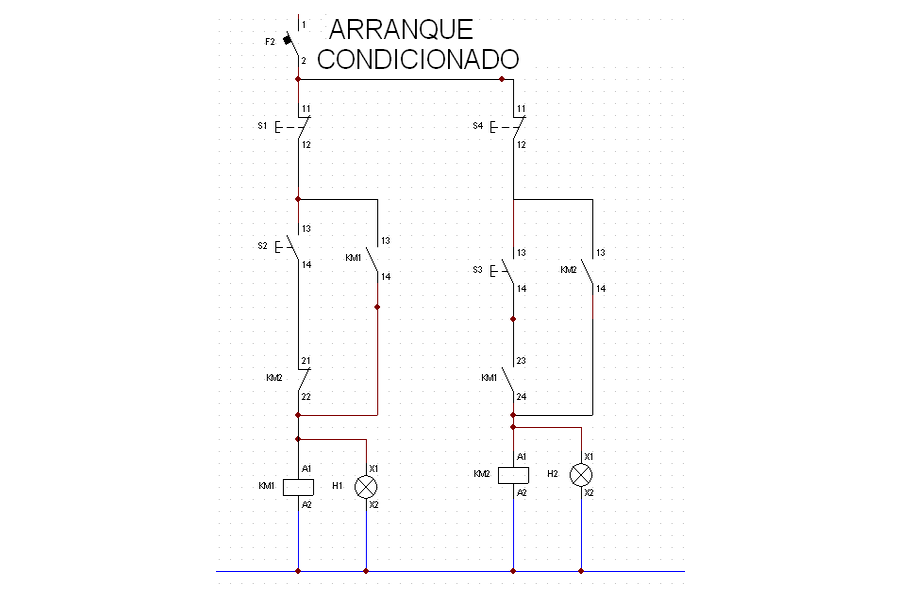
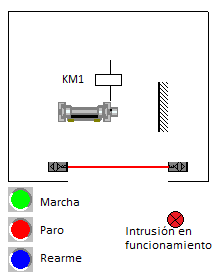
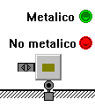

AUTOMATISMOS

BARRERA FOTOELECTRICA.
La maquina del interior del recinto se pone en marcha con el pulsador verde, se para con el pulsador rojo.Si cuando la maquina esta en funcionamiento entramos en el recinto, la maquina se para, y se enciende el piloto rojo, no se podra poner en marcha hasta rearmar la instalación activando el pulsador azul.
Al rearmar la instalción se apagara la luz roja y estara dispuesta para el funcionamiento normal.

DETECTOR DE METALES.
Al colocar un objeto sobre el final de carrera, si es metálico se enciende la luz verde, si no lo es se enciende la luz roja.El final de carrera dispone de dos camara de contacto una abierta y otra cerrada.
El sensor inductivo es de 2 hilos que deja para la corriente al aproximarle un objeto metalico.

FUNCIÓN PULSO.
Al pulsar marcha, se activa el contactor KM1 durante 20 segundos se para.
PARADA DE EMERGENCIA.
Dibuja y simula el ciruito marcha paro de un contactor, tambien pueda pararse con una parada de emergencia.
PARADA DE EMERGENCIA Y REARME.
Dibuja y simula el ciruito marcha paro de un contactor, tambien pueda pararse con una parada de emergencia, pero si se ha desconectado desde la parada de emergencia el contactor solo se podra volver a poner en marcha mediante la pulsador de rearme.
La parada de emergencia utiliza un contacto NC.
(posiblemente se necesite un contactor auxiliar).
SOLUCIONES EJERCICIOS RESUELTOS. APORTADAS POR LOS ALUMNOS.
PRACTICAS o EJERCICIOS 1ª PARTE
Práctica1
Montar la puesta en marcha de un contactor con un pulsador.
Práctica 2
Montar un circuito marcha – paro.
Práctica 3
Montar la puesta en marcha de un contactor con dos pulsadores de marcha y dos de paro.
Práctica 4
Montar la puesta en marcha de un contactor con los dos pulsadores de marcha a vez, y dos de paro.Práctica 5
Realiza el circuito de mando de una puerta de garaje, con dos finales de carrera, dos pulsadores y un pilloto rojo.Funcionamiento:
- La puerta sube mientras este pulsado subir y no este arriba.
- La puerta baja mientras este pulsado bajar y no este abajo.
- Si pulso subir y bajar a la vez la puerta se para y se enciende el piloto rojo.
Práctica 6
Realiza el circuito de mando de una instalacion con dos cofres elécrtricos con dos contactores, 4 pulsadores y un piloto rojo cada uno .Funcionamiento.
Cofre 1
El contactor KM1 se activa con un circuito marcha paro.
El contactor KM2 se activa con otro circuito marcha paro pero condicionado a que esta activado el KM1 del cofre eléctrico 2.
Mientras el contactor KM2 no tenga la condiciones de activación, el piloto rojo estara encendido.
En el cofre 2:
El contactor KM1 se activa con un circuito marcha paro.
El contactor KM2 se activa con otro circuito marcha paro pero condicionado a que esta activado el KM1 del cofre eléctrico 1.
Mientras el contactor KM2 no tenga la condiciones de activación, el piloto rojo estara encendido.
Practica
7
Realiza un circuito marcha -paro, en el que la marcha se efectua con
una pulsación de 5 segundos sobre el pulsador de marcha.Práctica 8
Realiza el circuito de mando de un contactor, que se activa mediante un pulsador de marcha y se desactiva 5 segundos despues de pulsar paro.Nota: se necesitan 2 contactores auxiliares.
Practica 9
La puesta en marcha de una maquina mediante un pulsador bimanual consiste en la pulsación simultanea con las dos manos de los dos pulsadores , para asegurar que durante la puesta en marcha el operario este fuera de la zona de peligro.Para evitar que el operario realize un mal uso del bimanual. Al pulsar un pulsador, el siguiente se debe de pulsar antes de un tiempo limitado. Pasado ese tiempo si se pulsa el otro pulsador, no se pone en marcha, con lo que hay volver a repetir la maniobra.
Realiza la puesta en marcha de un contactor con un bimanual, con un tiempo máximo de diferencia entre pulsadores de 1 segundo , la parada se realiza con un pulsador de paro.
Practica 10
Realiza un circuito marcha paro, de un contactor conectado a un rele termico, de forma que si se produce una falta de fase o sobreintensidad, el motor se para y se enciende un piloto rojo.Comprueba el funcionamiento de la practica utilizado el boton de test, paro y rearme manual o automático.
Practica 11
Realiza el circutio de mando y potencia de una instalación de una prensa eléctrica.Funcionamiento:
Para poner en marcha la prensa, esta debe estar subida, y pulsar un bimanual (dos pulsadores, con una diferencia maxima de 0,5 segundos entre pulsaciones).
La prensa baja y al llegar al final de carrera inferior, se para y sube hasta llegar al final de carrera superior.
Para evitar posibles cortocircuitos en el circuito de potencia, ponemos un enclavamiento mecanico entre los contactores de potencia.
Ademas la prensa se parara en caso de fallo de los reles termicos, o con la parada de emergencia.
PRACTICAS o EJERCICIOS 2ª PARTE
Práctica 1
Circuito de potencia y mando del arranque de un motor trifásico mediante Marcha paro, con parada de emergencia, protección térmica, señalización verde (funcionando), rojo (activación del térmico o parada de emergencia).Práctica 2
Circuito de potencia y mando del cambio de giro de un motor trifásico con selector, mediante Marcha paro, con parada de emergencia, protección térmica, señalización verde (funcionando ), rojo (activación del térmico o parada de emergencia).Práctica 3
Circuito de potencia y mando, del cambio de giro pasando por paro de un motor trifásico , mediante pulsadores marcha paro, con parada de emergencia, protección térmica, señalización verde (funcionando ), rojo (activación del térmico o parada de emergencia).Práctica 4
Circuito de potencia y mando, del cambio de giro sin pasar por paro de un motor trifásico , mediante pulsadores marcha paro, con parada de emergencia, protección térmica, señalización verde (funcionando ), rojo (activación del térmico o parada de emergencia).Práctica 5
Movimiento continuo, al activar un interruptor el motor realiza un movimiento continuo, girando 6 segundos en un sentido, y 5 en sentido contrario, hasta que desactivemos el interruptor.Práctica 6
Circuito de potencia y mando, del cambio de giro pasando por paro de un motor trifásico , mediante pulsadores marcha para cada sentido, una parada de emergencia, parada con un final de carrera para un sentido y otro final de carrera para el sentido contrario, protección térmica,señalización piloto rojo a la activación del térmico o parada de emergencia.Práctica 7
Circuito de potencia y mando, del arranque de un motor monofásico, con desconexión automática del devanado de arranque, señalización del piloto rojo a la activación del térmico.Práctica 8
Circuito de potencia y mando, cambio de giro pasando por paro de un motor monofásico, con desconexión automática del devanado de arranque, señalización del piloto rojo a la activación del térmico.EJERCICIOS: ACTIVACIÓN DE CONTACTORES.
Activación con un contactor con:
1. un interruptor2. un pulsador de marcha y otro de paro
3. Dos pulsadores de marcha y uno de paro
4. 1 pulsador de marcha y tres de paro.
5. Tres pulsadores de marcha y tres de paro.
6. Marcha con dos pulsadores a la vez (S1 y S2) y paro con dos pulsadores a la vez (S3 Y S4).
7. Marcha con dos pulsadores a la vez (S1 y S2) o con el pulsador S3 y paro con (S4 y S5) o con S6.
Activación de dos contactores:
8. Un pulsador de marcha y otro paro para cada contactor.9. Un pulsador de marcha para cada contactor y el de paro para los dos.
10. Un pulsador de marcha y otro paro para cada contactor y otro de paro para los dos.
11. Un pulsador de marcha para los dos contactores y paro individualizado con dos pulsadores.
12. Un pulsador de marcha KM1 y paro KM2, el otro pone en marcha KM2 y paro KM1, y otro pulsador para KM1 y KM2.
13. Un pulsador de marcha KM1, otro pulsador pone en marcha KM2 si esta activo KM1 y otro pulsador para KM1 y KM2.
14. Un pulsador de marcha para cada contactor y el de paro para los dos, con la condición de que si esta KM1 no puede entrar KM2 y viceversa.
Con un temporizador.
15. Tengo que pulsar marcha durante 5 segundos para activar KM2.16. Con marcha se activa KM1 y si sigo pulsando durante 5 segundos se activa KM2, con otro pulsador paro todos los contactores.
17. Con marcha se activa KM1 y pasados 5 segundos se activa si pulso otra vez marcha activo KM2 y se desactiva KM1, con otro pulsador paro todos los contactores.
18. Con marcha se activa KM1 y si mantengo pulsado 5 segundos se activa activo KM2 y se desactiva KM1, con otro pulsador paro todos los contactores. (aux KM3)
19. Con marcha activo KM1 y KM2 , a los cinco segundos desactivo KM2 ya activo KM3. Con paro, desactivo todos los contactores.
EJERCICIOS LÓGICA CABLEADA
3.- Dibuja y simula el circuito con la clave secreta de tres puplsadores NA (S1 pulsado, S2 pulsado, S3 no pulsado), y al activar un interruptor, si la clave es correcta se enciende un piloto verde, si es incorrecta un piloto rojo.
4.- Dibuja y simula el circuito de la puerta de un garaje con dos finales de carrera y un pulsador. al accionarlo la puerta sube esta 5 segundos subida y baja.
5.- Añade una fotocelula al circuito anterior de forma que si se interpone un objeto cuando la puerta baja, esta se para y vuelve a subir.
6.-La puesta en marcha de una maquina mediante un pulsador bimanual consiste en la pulsación con las dos manos de los dos pulsadores a la vez, para asegurar que durante la puesta en marcha el operario esté fuera de la zona de peligro.
Para evitar que el operario realize un mal uso del bimanual. Al pulsar un pulsador, el siguiente se debe de pulsar antes de un tiempo determinado. Pasado ese tiempo el bimanual no se pone en marcha, con lo que hay volver a repetir la maniobra.
Dibuja el circuito de mando de la puesta en marcha de un contactor con un bimanual, con un tiempo máximo de diferencia entre pulsadores de 1 segundo , la parada se realiza con un pulsador de paro.
7.- Marcha con pulsación larga y paro por pulsador de paro
Monta un circuito de mando, de forma que para activarse tiene que estar pulsado durante 5 segundos el pulsador 1 y se parara con el pulsador 2
TITULOS DE PRÁCTICAS DE AUTOMATISMOS CABLEADOS.
1º Encendido de tres bombillas con a través de un contactor, que se activa con un pulsador. 12º marcha paro de tres bombillas.
3º dos pulsadores de marcha 1 de paro.
4º dos de marcha a la vez 1 de paro.
5º Señalización de funcionamiento del contactor verde.
6º marcha paro y señalización de un motor.
7 cambio de giro pasando por paro
8 cambio de giro sin pasar por paro.
9 cambio de giro con señalización de giro a derechas rojo o izquierdas verde.
10 Puesta en marcha con pulsación larga.
11 puesta en marcha del motor 1 y del motor 2 si esta arrancado el motor 1
12 puesta en marcha del motor 1 y pasado un tiempo se pone en marcha el motor
13 con un pulsador, si le pulso menos de 1 segundo se pone en marcha el motor 1, si se pulsa mas de 1 segundo se pone en marcha el motor 2.
14 motor protegido por un térmico con señalización.
15 retardo a la conexión electrónica
16 temporizado intermitente.
17 retardo a la desconexión electrónico.
18 bimanual
19 bimanual con parada de emergencia.
20- arranque de un motor monofasico.
21- arranque de un motor monofasico con cambio de giro
22- arranque estrella triangulo con pulsadores.
23- estrella triangulo temporizado.
24- arranque estrella triangulo con cambio de giro.
25- puerta de garaje con pulsador de abrir y cerrar
25- puerta de garaje, temporizada al cierre con parada de emergencia.
27- Arranque de un motor dalhander con dos velocidades.
28- frenado de un motor con corriente continua.
29- arranque de un motor con resistencias estatoricas.
30- Arranque de un motor con rotoricas.
31- Arranque de motores de corriente continua.
32- Arranque estrella triangulo montando en cofre.
33 arranque progresivo de un motor de corriente alterna
34 Variadores de velocidad.